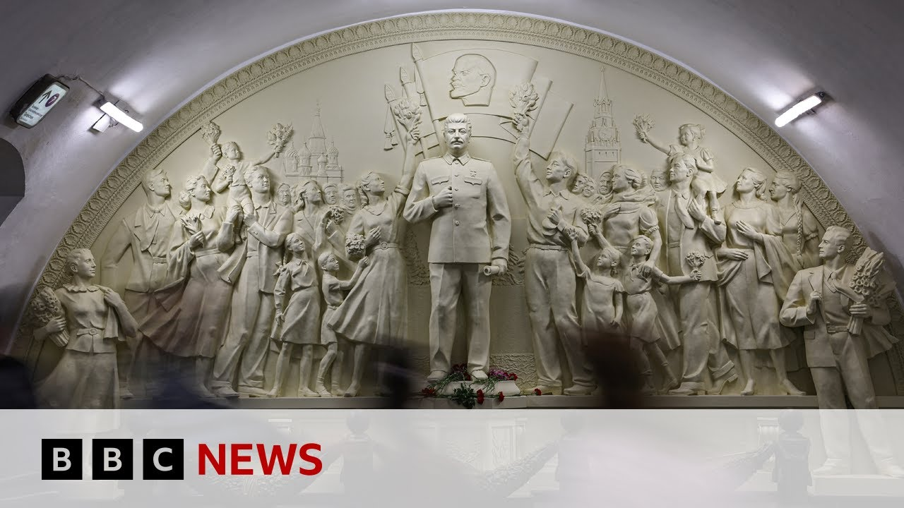

【一座新的斯大林雕像揭示了俄罗斯重塑历史的企图 | BBC新闻】
Summary: In Russia, the past is constantly changing as authorities reinterpret history to justify current events like the war in Ukraine, with Stalin's rehabilitation and nostalgia for the USSR resurfacing.
摘要： 在俄罗斯，过去不断被改写，当局重新诠释历史以证明乌克兰战争等当前事件的正当性，斯大林的平反和对苏联的怀旧情绪正在重现。

⏱️ Estimated Reading Time: 4 min
[Music] In Russia, not only do people not know what the future will hold, they don't know what the past will hold.
[音乐] 在俄罗斯，人们不仅不知道未来会怎样，他们也不知道过去会怎样。
The past here is constantly changing.
这里的过去在不断变化。
So, I'm going down into the Moscow Metro because somewhere here, deep underground, a ghost of Russia's past has reappeared.
所以，我要进入莫斯科地铁，因为在这里的某个地下深处，俄罗斯过去的幽灵重新出现了。
And there he is, Joseph Stalin, a brand new statue of the Soviet dictator.
就是他，约瑟夫·斯大林，一座崭新的苏联独裁者雕像。
Now, there was a time after his death when all the Stalin statues in Russia were were removed, were knocked down, when Stalin's cult of personality and his crimes against the people were officially condemned.
曾经在他去世后的一段时间里，俄罗斯所有的斯大林雕像都被拆除、推倒，当时斯大林的个人崇拜和他对人民的罪行被官方谴责。
The great terror, the millions sent to the gulag, the hundreds of thousands of people executed.
大恐怖时期，数百万人被送往古拉格，数十万人被处决。
But Stalin monuments have been popping up again all over Russia.
但斯大林的纪念碑再次在俄罗斯各地出现。
Today, the authorities are focusing on Stalin, the strong man.
如今，当局正聚焦于斯大林，这位强人。
Stalin, the victorious wartime leader.
斯大林，这位胜利的战时领袖。
Stalin is being rehabilitated.
斯大林正在被平反。
What do young people today think about Stalin?
今天的年轻人对斯大林有什么看法？
Uh well, I think that uh Joseph Stalin is unfairly hated.
呃，我觉得约瑟夫·斯大林被不公平地憎恨。
Uh he did a lot to our nation that we still um use.
呃，他为我们的国家做了很多我们至今仍在受益的事情。
There was of course the the Stalin terror and many people suffered in the goolags.
当然，还有斯大林恐怖时期，许多人在古拉格受苦。
About this point of view, we cannot blame only Stalin because it was a system.
关于这一点，我们不能只责怪斯大林，因为这是一个体制问题。
But it's not just Joseph Stalin who's making a comeback.
但卷土重来的不仅仅是约瑟夫·斯大林。
So would you believe is the USSR.
你可能会相信是苏联。
I'll explain how a little bit later.
我稍后会解释这一点。
But I mean the Soviet Union, it's long gone, right?
但苏联早已不复存在，对吧？
It fell apart more than 30 years ago.
它在30多年前解体了。
There's even a museum dedicated to it here in the center of Moscow.
甚至在莫斯科市中心还有一个专门纪念它的博物馆。
I've just been to take a [Music] look.
我刚去[音乐]看了看。
[Music] either.
[音乐]也是。
What about It's a real Aladdin's cave, or perhaps I should say Lenin's cave, full of the sights and the sounds and even the smells of a country that has passed into history.
它就像一个真正的阿拉丁洞穴，或者我应该说列宁的洞穴，充满了已经进入历史的国家的景象、声音甚至气味。
And yet just a few days ago, one of President Putin's advisers suggested that legally the USSR still exists because when it was being dissolved, allegedly there were procedural violations.
然而就在几天前，普京总统的一位顾问提出，从法律上讲苏联仍然存在，因为据说在它解体时存在程序违规。
And he said that to try to make out that Russia's war in Ukraine is an internal matter for Moscow.
他这样说，试图将俄罗斯在乌克兰的战争描绘成莫斯科的内部事务。
And then a former Russian prime minister came out and backed him up.
然后一位俄罗斯前总理站出来支持他的说法。
Just over there by Red Square, there are some ultra nationalists who agree and who want the Soviet Union back.
就在红场那边，有一些极端民族主义者同意并希望苏联回归。
SS I'm not saying We're definitely going to wake up one morning to find that the USSR is back.
我不是说我们某天早上醒来一定会发现苏联回来了。
But it's interesting that the idea is being planted.
但有趣的是，这个想法正在被植入。
And it's interesting too how the past is being reinterpreted, remolded here under the influence of current events, the war in Ukraine, confrontation with the West, the push for patriotism.
同样有趣的是，在乌克兰战争、与西方的对抗以及爱国主义推动等当前事件的影响下，过去如何在这里被重新诠释和重塑。
Now, Moscow accuses the West all the time of rewriting history.
如今，莫斯科一直指责西方改写历史。
What's happening here does feel like an attempt by the Russian authorities to reshape the past, to try to justify the present.
这里发生的事情确实像是俄罗斯当局试图重塑过去，以证明现在的正当性。